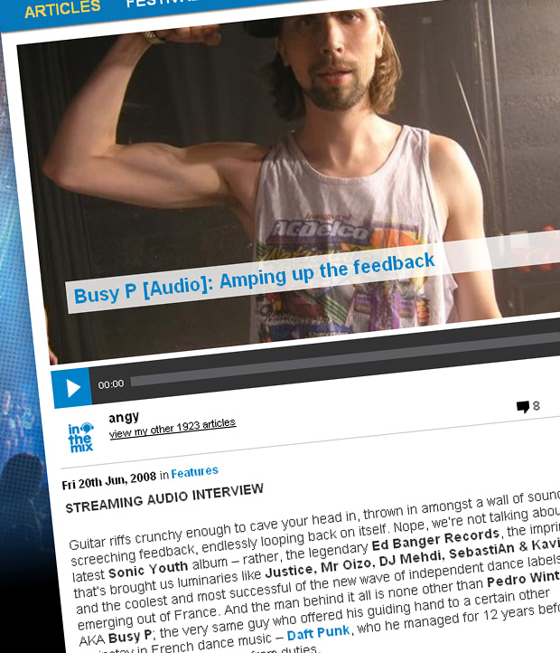

Busy P [Audio]: Amping up the feedback


ORIGINAL ARTICLE CONTAINS STREAMING AUDIO INTERVIEW
Guitar riffs crunchy enough to cave your head in, thrown in amongst a wall of sound and screeching feedback, endlessly looping back on itself. Nope, we’re not talking about the latest Sonic Youth album – rather, the legendary Ed Banger Records, the imprint that’s brought us luminaries like Justice, Mr Oizo, DJ Mehdi, SebastiAn & Kavinsky, and the coolest and most successful of the new wave of independent dance labels emerging out of France. And the man behind it all is none other than Pedro Winters AKA Busy P; the very same guy who offered his guiding hand to a certain other mainstay in French dance music – Daft Punk, who he managed for 12 years before only recently stepping down from duties.
And he likes to rock. Something that’s fundamental to all of the material coming from the Ed Banger roster is a heavy “rock n’ roll” influence, as well as an undying love of feedback. While the Germans are obsessed with making their music deeper, more stripped back and minimal, over in the streets of Paris they’ve got a different focus altogether – ‘maximal’ is perhaps a better way to describe it.
And the same man who was working behind the scenes to push the first big wave of French house music out to the world in the 90s, in the new millennium he’s making sure that his country will remain in the spotlight for many years to come. “The responsibility is a big thing, but I’m not a politician. I’m more running away from Western civilities than accepting them,” he told ITM. “But of course I’m completely aware that I’ve been part of the French scene, and part of that dynamic… I’m working hard for my culture and country, and I’m glad we’ve managed to make some noise.”
Could Pedro Winters be the most influential man working in dance music today? One thing’s for sure, he’s certainly rocking some pretty awesome facial hair. ITM’s Angus Paterson talks to the man, the legend, the bearded enigma that is Busy P.
Ed Rec Vol III is out now through Filter Music/Shock Records.